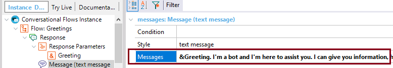

Specify the response messages for this flow. You can type multiple messages using the ‘;’ delimiter and you can reference any context parameter using the '&' character. Description
Through the Messages property of a Message node - under the Response of a Flow of a Conversational instance, you can specify a text response to the end user, after the Flow finishes its execution. In order to specify context parameters into the Messages, see HowTo: Reference context parameters in a conversation. Samples
In the next example, the Greetings Conversational Flows instance has a Message node under the Response, which Messages property includes a text message greeting the end user. The &Greeting variable is returned by the Conversational Object of the Flow.  AvailabilityThis property is available since GeneXus 15 upgrade 12. Scope Objects: Conversational Flows See Also
|
| Backlinks | |
| Chatbot Response | |
| Trigger Messages property | Trigger Messages property (GeneXus 15 Upgrade 12) |